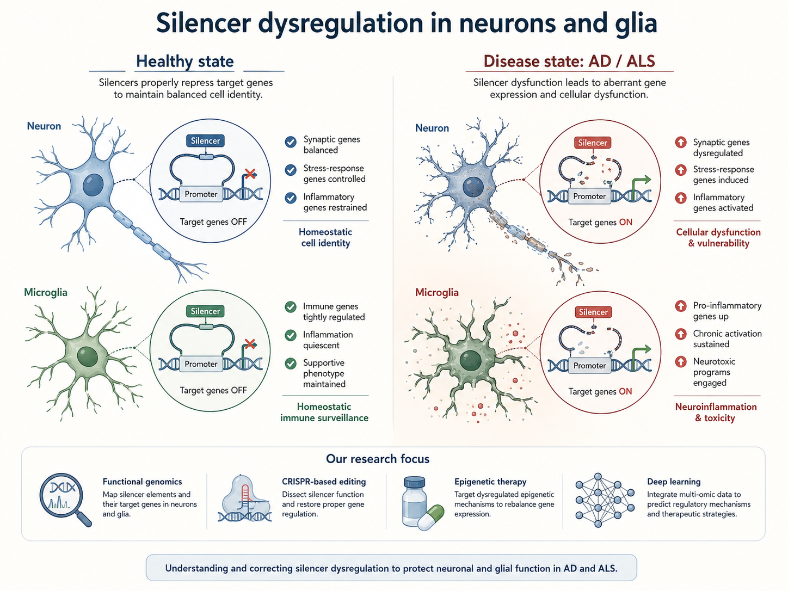
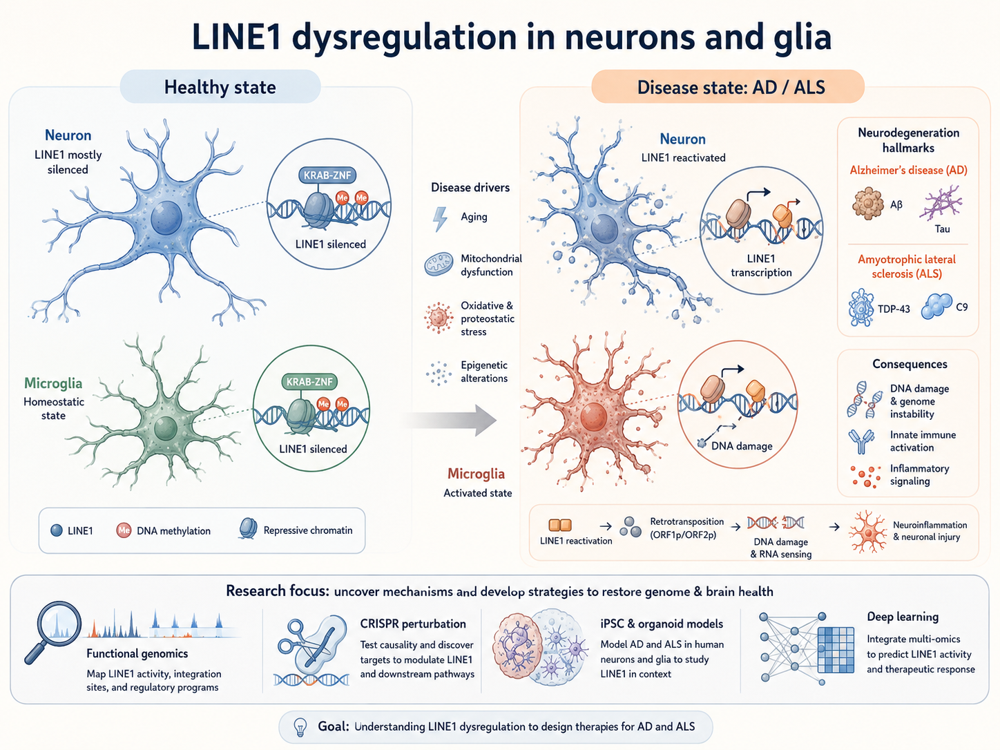
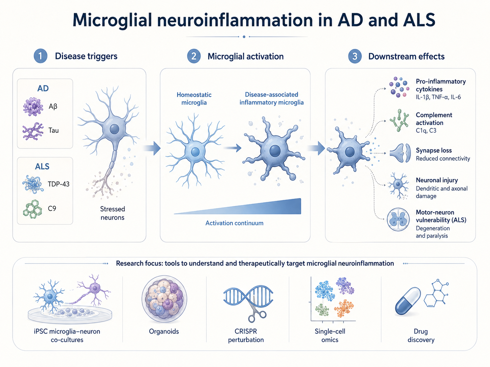

Neurodegenerative diseases, including Alzheimer's disease (AD) and amyotrophic lateral sclerosis (ALS), are devastating disorders marked by progressive neuronal dysfunction, glial activation, and loss of brain or motor function. Although recent therapeutic advances have provided important proof of principle, current treatments remain limited and do not fully stop or reverse disease progression.
My research aims to understand how genetic and epigenetic mechanisms drive neuronal and glial vulnerability in neurodegenerative disease. By integrating functional genomics, CRISPR-based perturbation, human iPSC-derived neurons, microglia, and brain organoid models with deep learning approaches, I seek to identify disease-relevant regulatory mechanisms and discover epigenetic therapeutic strategies for AD, ALS, and related disorders.
1. Silencer Dysregulation in Neurodegenerative DiseaseSilencers are regulatory DNA elements that repress gene expression and help maintain proper cell identity and genome function. In neurodegenerative diseases such as AD and ALS, silencer activity may become disrupted in neurons and glial cells, including microglia, leading to abnormal repression of neuroprotective genes or misregulation of inflammatory, stress-response, and synaptic pathways. My research aims to identify disease-associated silencers across neuronal and glial cell types, determine how they control gene expression programs, and test whether CRISPR editing or epigenetic drug treatment can restore healthy regulatory states. This work will help define how transcriptional repression contributes to neuronal vulnerability, glial dysfunction, and disease progression |
 |
2. LINE1 Dysregulationin Neurodegenerative DiseaseLong Interspersed Nuclear Element-1 (LINE1 or L1) is a retrotransposon that is normally kept silent by epigenetic mechanisms. During aging and neurodegeneration, L1 may become reactivated in vulnerable neurons and glial cells, potentially triggering DNA damage, innate immune signaling, inflammation, and cellular toxicity. My research focuses on understanding how L1 escapes epigenetic silencing in AD and ALS, how L1 activity differs across neurons and glia, and whether L1-driven genome stress contributes to disease progression. By combining functional genomics, CRISPR perturbation, iPSC-derived disease models, and deep learning, I aim to uncover mechanisms that link retrotransposon dysregulation to neurodegeneration and identify strategies to suppress harmful L1 activity. |
 |
3. Neuroinflammation in Neurodegenerative DiseaseMicroglia are the resident immune cells of the central nervous system and play essential roles in brain development, synaptic remodeling, injury response, and protein aggregate clearance. In AD and ALS, however, microglia can shift into disease-associated inflammatory states that may initially protect the tissue but later contribute to chronic inflammation, synapse loss, neuronal stress, and motor neuron degeneration. My research aims to define how disease-associated microglial states are regulated by genetic risk, epigenetic mechanisms, neuronal stress signals, and pathological proteins such as Aβ, Tau, TDP-43, and C9ORF72-associated products. Using iPSC-derived microglia, neuron–microglia co-cultures, brain organoids, single-cell functional genomics, CRISPR editing, and drug perturbation, I seek to identify inflammatory pathways that can be reprogrammed to protect neurons and slow neurodegeneration. |
 |